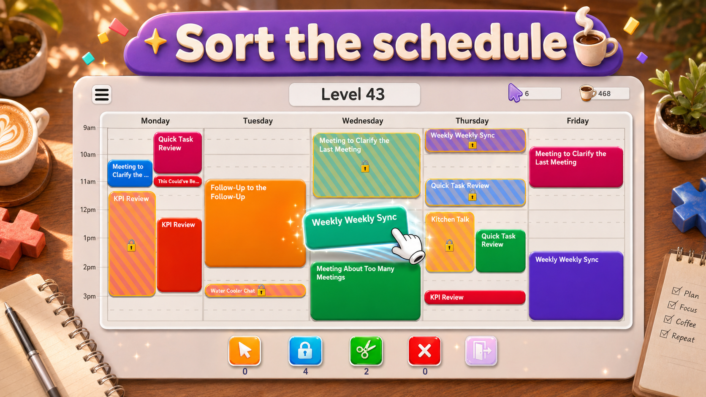

The core idea
A calendar puzzle game is a puzzle built around time, space, and constraints. The board looks like a schedule. The pieces are meetings, tasks, appointments, or blocks of time. The player solves the level by moving those blocks into valid positions until the day becomes readable again.
That makes the genre feel different from match-3, word, number, or hidden-object puzzles. The player is not matching a symbol or hunting for a secret item. They are reorganizing a system. The satisfaction comes from changing a messy plan into a clean one.
In Meeting Mayhem on Google Play, the idea is direct: a calendar has overlapping meetings, locked events, open slots, and movable blocks. Your job is to untangle it.

Why calendars make good puzzle boards
Calendars already contain the ingredients of a puzzle. Time slots create a grid. Events have different durations. Some commitments are fixed. Some spaces are open. Two events cannot occupy the same time. You can understand the problem without learning an abstract rule system from scratch.
That familiarity lowers the barrier to entry, but it does not remove the challenge. A good calendar puzzle can still ask interesting questions:
- Which meeting should move first?
- Which open slot should stay free for a longer event?
- Which locked event is shaping the whole solution?
- Which move clears the most conflicts instead of merely moving the conflict elsewhere?
Those questions create a compact logic problem. The board can look friendly while still rewarding careful planning.
The main mechanics
Calendar puzzle games usually rely on a few simple mechanics. The first is duration. A short block can fit in many places, while a long block needs a wider opening. The second is position. A meeting may be valid in one slot and impossible in another. The third is conflict. If two blocks overlap, something has to move.
Meeting Mayhem adds the kind of structure mobile puzzle players expect: quick levels, visual feedback, power-ups, daily tasks, and a loop that works in short sessions. The important part is that those systems support the calendar puzzle instead of replacing it. The board still asks you to reason about the schedule.
Try the format yourself
Meeting Mayhem is free on Android and links directly to the official Google Play Store listing.
Open Meeting Mayhem on Google PlayWhat makes the genre satisfying
There is a reason "cleaning up the calendar" works as a puzzle fantasy. A messy calendar is a small, understandable kind of chaos. Most people know what it feels like when a day is overbooked, when two things collide, or when a plan has no breathing room.
A calendar puzzle gives that tension a safe little container. The player can inspect the situation, make a plan, and fix it. When the last overlap disappears, the result is not just a win state. It feels like order has been restored.
What separates a good calendar puzzle from a theme pasted onto a puzzle
A game can use calendar art without truly being a calendar puzzle. For the theme to matter, the calendar needs to affect the decisions. Time slots should matter. Durations should matter. Conflicts should matter. Locked events should change the way the player thinks.
When those pieces are real mechanics, the theme becomes useful. The player is not solving an unrelated block puzzle with calendar decorations; they are solving a schedule. That is the difference Meeting Mayhem tries to lean into.
Who might enjoy calendar puzzle games?
This style is a good fit for players who like sorting, organizing, planning, and short logic challenges. It may also appeal to people who enjoy productivity apps, clean layouts, task lists, or games that turn everyday systems into playful problems.
It is not about making real work feel heavier. Done well, it does the opposite: it makes a familiar kind of work-shaped mess feel light, funny, and solvable.
Where to start
If you are curious about the format, start by looking at the board as a whole. Find the overlaps, find the longest meetings, and notice which events cannot move. Then make the move that creates the most future space.
You can install Meeting Mayhem directly from Google Play and try the idea in a few quick levels.